Palermo — Esplorazione demografica
Censimento ISTAT 2021 per sezione
- Dati del censimento
- Mappa e confini
Uno strumento interattivo per esplorare la struttura demografica di Palermo a scala di quartiere e di isolato: scegli un punto sulla mappa (o disegna un'area) e ottieni un profilo della popolazione che vi risiede.
Per l'area selezionata (circolare a raggio variabile o poligonale) aggrega le sezioni censuarie coinvolte e mostra popolazione residente, composizione per sesso ed età, cittadinanza italiana e straniera, istruzione, occupazione e abitazioni. È possibile confrontare due zone (A/B), collocarle nella classifica di circoscrizioni, quartieri e UPL ed esportare i risultati in CSV.
ISTAT — Censimento permanente della popolazione e delle abitazioni 2021: variabili censuarie e basi territoriali per sezione di censimento (3.600 sezioni nel Comune di Palermo, 3.079 con dati di popolazione). Confini di circoscrizioni, quartieri e UPL: Comune di Palermo.
PalermoHub / OpenDataSicilia.it
Contenuti distribuiti con licenza CC BY-SA 4.0.
Web app progettata e sviluppata da @gbvitrano in collaborazione con Claude AI (Anthropic), che ha affiancato le scelte architetturali, l'ottimizzazione del codice e lo sviluppo delle funzionalità di visualizzazione geospaziale.
Questa mappa è stata ispirata dal lavoro di Mohammad VahidiBorji, in particolare dai suoi post su analisi spaziale e pianificazione urbana e sul WebGIS per la pianificazione urbana.
I contenuti presenti in questa sezione, compresi testi ed elementi grafici, hanno carattere puramente informativo e divulgativo. Non sono presenti dati personali o sensibili. Questi materiali non costituiscono documenti ufficiali né hanno alcun valore legale: la mappa e le informazioni contenute nelle schede possono presentare errori, imprecisioni o campi mancanti.
La mappa stima il profilo della popolazione che risiede in un'area scelta liberamente, sommando i dati delle sezioni di censimento ISTAT 2021 che ricadono al suo interno. Tutti i calcoli avvengono nel browser, in tempo reale, su dati preparati in anticipo: non c'è un server che elabora le richieste e nessun dato dell'utente viene inviato altrove.
| Dato | Fonte | Uso nella mappa |
|---|---|---|
| Variabili censuarie per sezione | ISTAT — Censimento permanente della popolazione e delle abitazioni 2021 | Tutti gli indicatori dei grafici e dei CSV |
| Basi territoriali (sezioni 2021) | ISTAT | Geometrie delle sezioni, centroidi, superfici |
| Circoscrizioni, quartieri, UPL | Comune di Palermo | Confini sulla mappa, classifiche, localizzazione della zona |
| Edificato 3D (111.844 edifici) | Volumetria comunale 2006, Overture Maps, Global Building Atlas, OpenBuildingMap | Edifici estrusi in 3D e colorati per densità |
| Modello digitale del terreno | HR-DTM-5m, IRPI-CNR (Panza et al., 2026) | Rilievo 3D, elevazione, indici del pannello DTM |
| Mappa di base | OpenFreeMap (dati OpenStreetMap) | Sfondo cartografico chiaro e scuro |
Le operazioni più pesanti sono eseguite una volta sola, fuori dal browser, con strumenti GIS (GDAL/OGR, QGIS e tippecanoe). Il risultato sono file statici che l'applicazione scarica solo quando servono.
SEZ21_ID. A ogni sezione vengono associati la circoscrizione, il quartiere e l'UPL di
appartenenza, la superficie e le coordinate del centroide (lon, lat).La sezione di censimento è la più piccola ripartizione per cui ISTAT pubblica variabili su popolazione, famiglie, istruzione, occupazione e abitazioni: nel centro storico corrisponde spesso a un isolato. Il Comune di Palermo ne conta 3.600, con 635.439 residenti al 2021.
Una sezione entra nella zona se il suo centroide cade all'interno dell'area di analisi. Non c'è ripartizione proporzionale per superficie: una sezione conta per intero oppure non conta.
Con raggi piccoli (sotto i 150–200 m) il risultato dipende molto dalla posizione esatta del centro: spostandolo di pochi metri una sezione può entrare o uscire.
I valori mostrati sono somme dei conteggi delle sezioni incluse. Le percentuali sono calcolate sui totali della zona, non come media delle percentuali di sezione: così ogni residente pesa allo stesso modo, qualunque sia la sezione in cui vive.
| Argomento | Campi ISTAT | Contenuto |
|---|---|---|
| Popolazione e sesso | P1 P2 P3 | Residenti totali, maschi, femmine |
| Piramide età-sesso | P30–P45, P67–P82 | 16 fasce quinquennali, da 0–4 a oltre 74 anni |
| Stranieri | ST1 ST3–ST5 ST16 ST19 | Totale, UE, extra-UE, tre fasce d'età |
| Nazionalità principali | CIT_1–CIT_10 | Le 10 cittadinanze straniere più presenti |
| Istruzione | P86–P90 | Titolo di studio più alto, residenti di 9 anni e più |
| Occupazione | P101–P103 | Occupati di 15–64 anni, totali e per sesso |
| Famiglie | PF3–PF8 | Famiglie da 1 a 6 e più componenti |
| Abitazioni | A2 A3 A8 | Occupate, vuote o occupate da non residenti, totali |
Gli edifici sono colorati con l'indicatore della sezione in cui ricadono, calcolato una volta per sezione:
Dentro la zona di analisi gli edifici mostrano sempre la densità di popolazione: un edificio è considerato interno se il suo centroide cade nella zona. Poiché tutti gli edifici di una sezione hanno lo stesso colore, la mappa non distingue un palazzo abitato da un magazzino nella stessa sezione.
La popolazione di 8 circoscrizioni, 25 quartieri e 55 UPL
(Unità di Primo Livello) è la somma delle sezioni che vi appartengono. Gli stranieri sono il campo
ST1; gli italiani sono ricavati per differenza (P1 − ST1).
L'unità evidenziata è quella in cui cade il centro della zona A, individuata sul confine UPL.
Il pannello di destra descrive il terreno con i dati dell'HR-DTM-5m dell'IRPI-CNR, un modello del terreno a 5 m di risoluzione ottenuto da rilievi LiDAR integrati con TINITALY. Gli indici sono stati calcolati sul DTM a 5 m e poi campionati su una griglia a passo 50 m.
Il dettaglio di ogni indice è nella mappa palermo_dtm5m.
Il CSV dei totali riporta, per la zona A (ed eventualmente B), tipo di area, coordinate del centro, superficie, numero di sezioni, sezioni senza dati e tutti gli argomenti aggregati. La superficie è π·r² per il cerchio; per il poligono è calcolata con la formula di Gauss su una proiezione locale. Il CSV delle sezioni elenca i valori ISTAT originali di ogni sezione inclusa. I file usano il punto e virgola come separatore e la virgola decimale, così si aprono direttamente in Excel e LibreOffice.
I risultati sono stime a fini esplorativi e divulgativi e non sostituiscono le statistiche ufficiali.
In tre mosse: clicca un punto della città, scegli gli argomenti nel pannello di sinistra, leggi i risultati nei grafici e nel pannello di destra. Qui sotto trovi il percorso rapido e, più in basso, ogni funzione spiegata passo per passo con le schermate dell'applicazione.
All'apertura la mappa mostra l'invito «Clicca sulla mappa per attivare l'area di analisi». Al primo clic compare l'area A: un cerchio di 250 m di raggio, e i due pannelli laterali si aprono con i risultati.
Una sezione censuaria viene conteggiata se il suo centroide cade dentro l'area: per questo ai bordi il totale può differire da quello che l'occhio si aspetta (vedi Metodologia).
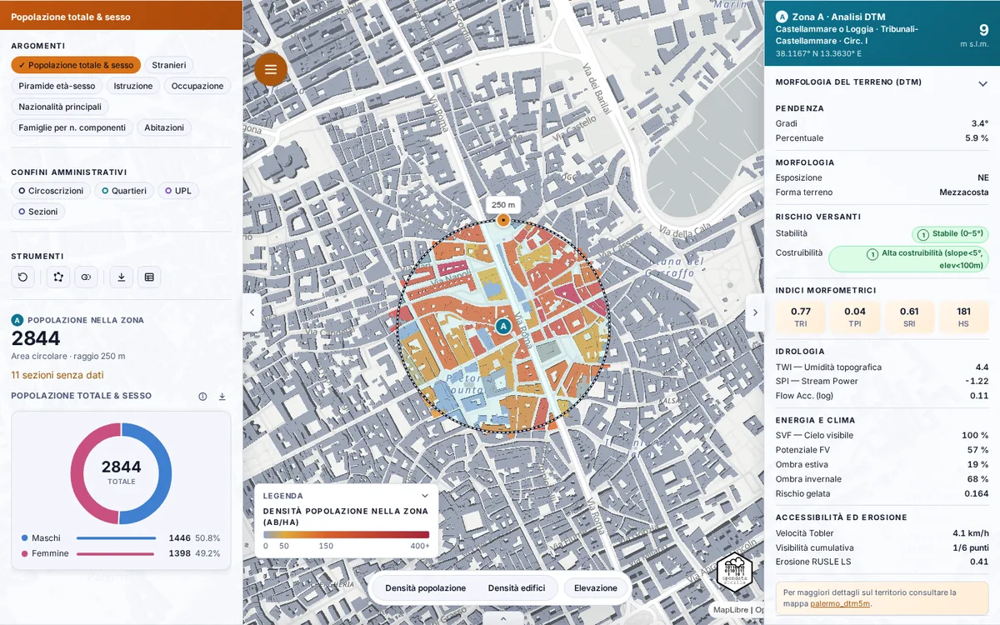
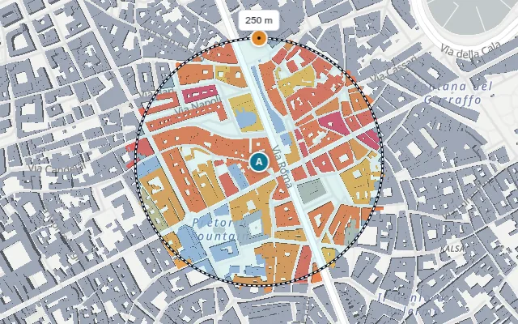
Quando il cerchio non segue la forma che ti interessa (un isolato, un tratto di lungomare, un quartiere irregolare), usa il poligono. Si trova negli Strumenti del pannello di sinistra (seconda icona) e sostituisce l'area circolare.
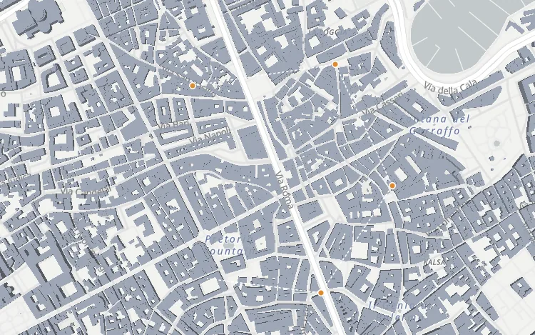
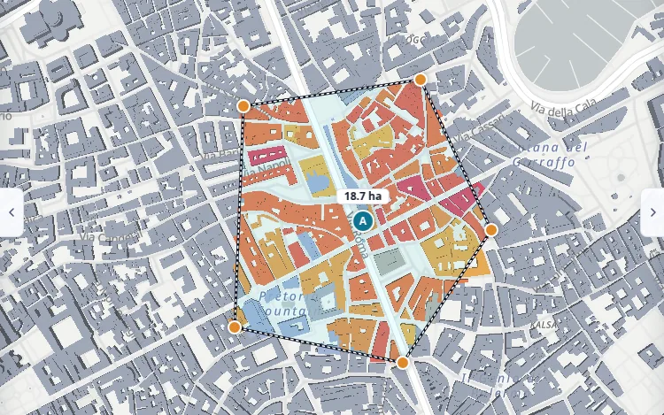
In cima al pannello Analisi ci sono gli Argomenti: ognuno aggiunge un grafico. Puoi attivarne quanti vuoi; un secondo clic lo spegne.
Sotto gli strumenti trovi il totale dei residenti nella zona, il tipo di area e, in arancio, quante sezioni senza dati ricadono nell'area: sono sezioni per cui il dataset ISTAT non riporta la popolazione, segnalate ma escluse dai totali (dettagli in Metodologia).
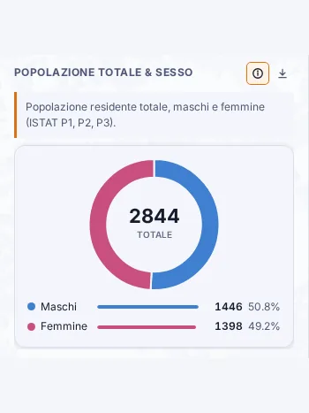
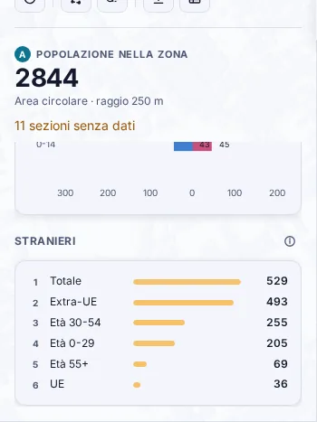
Con un'area attiva premi Confronta (terza icona degli Strumenti, due cerchi). Compare la zona B, in arancio, affiancata a est della A con la stessa forma e dimensione; se la A è un poligono, la B ne è una copia. Spostala e ridimensionala con le sue maniglie come la A.
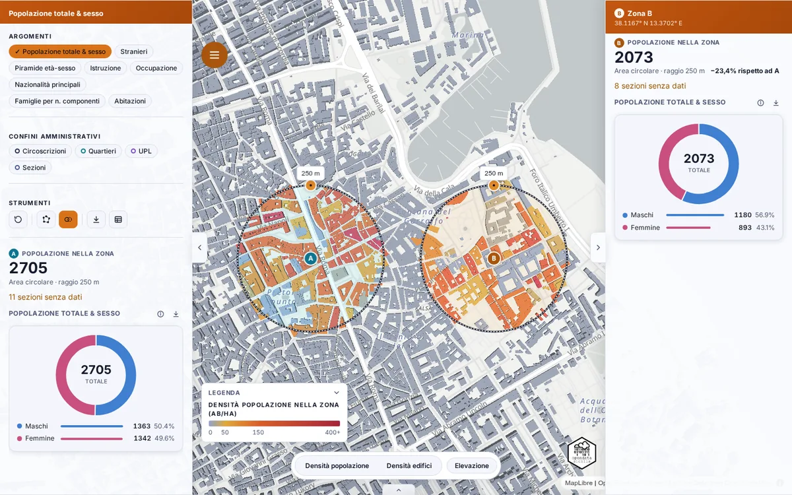
Il pannello di destra (Dettaglio) descrive il punto centrale dell'area A. L'intestazione riporta circoscrizione, quartiere e UPL, le coordinate e la quota in metri sul livello del mare. Sotto, due gruppi apribili:
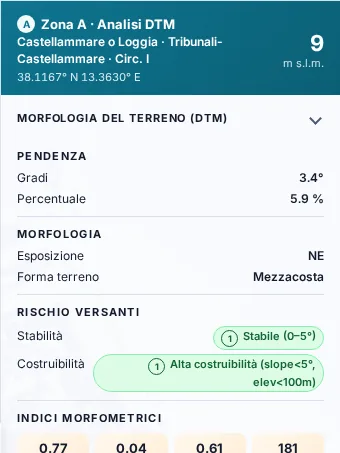
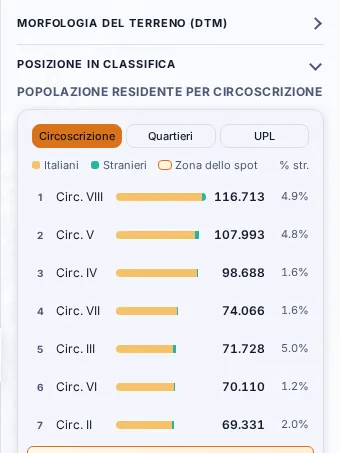
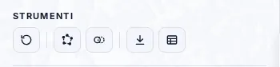
La barra in basso colora la città intera, indipendentemente dall'area di analisi:
Le due densità si escludono a vicenda; un secondo clic le spegne. I Confini amministrativi (nel pannello di sinistra) si sommano: circoscrizioni a linea continua, quartieri tratteggiati, UPL punteggiate, sezioni censuarie. Passando il mouse sulla mappa leggi il nome dell'unità. La legenda in basso a sinistra si aggiorna con i livelli attivi e si richiude con la freccia.
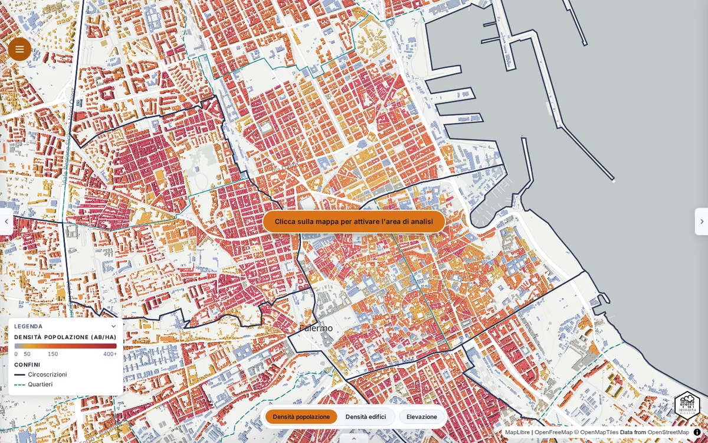
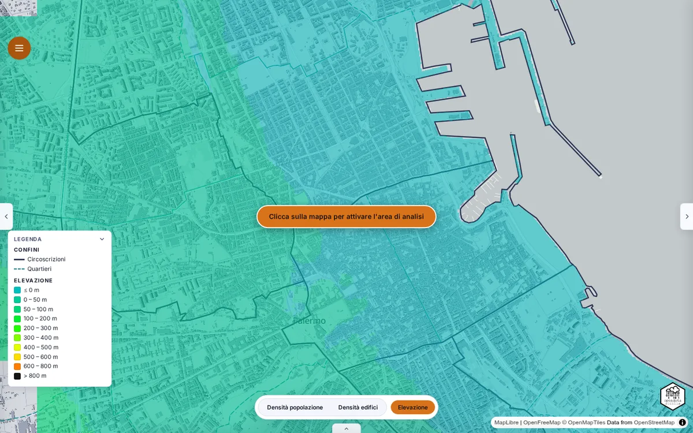
#15.2/38.1170/13.3630):
copialo per condividere la stessa inquadratura.Guida operativa per installare e usare QGIS in modalità headless — senza interfaccia grafica — su WSL2 (Linux dentro Windows) o Windows nativo, tramite micromamba. Consente di eseguire algoritmi QGIS Processing e codice PyQGIS da terminale o pipeline di automazione senza aprire il desktop.
Per "headless" si intende l'assenza di finestre grafiche. Su Qt è necessario impostare il plugin offscreen: export QT_QPA_PLATFORM=offscreen.
Nel progetto collegato Palermo DTM 5m è stato usato per automatizzare la derivazione di 18 layer morfologici dal DTM 5m di Palermo (~6,4M pixel).
Usa micromamba (gestore pacchetti leggero, variante di conda) per creare un ambiente isolato contenente QGIS e tutte le dipendenze — GDAL, PROJ, GEOS, Qt, Python. L'ambiente risiede in ~/micromamba/envs/qgis (~5 GB) ed è riutilizzabile da qualsiasi cartella o progetto.
micromamba create -n qgis -c conda-forge qgis -yexport QT_QPA_PLATFORM=offscreenmicromamba run -n qgis python script.pywsl -l -v → VERSION 2